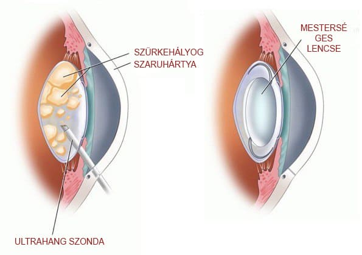
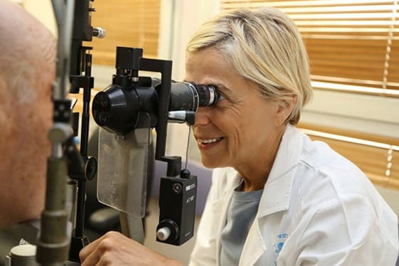

Én majdnem megvakultam. A 93 éves Gizella Sztefanova elmondta, hogyan sikerült
elkerülni a szürkehályog-műtétet.
v fr b tbgt bgr b hynbgfr vcdecde
tg b. n h nb tg frv dce
tg b hy nhtg br fv dcb thbg rfdev
v. b ht b tg frc dex
tg b n y n jyhtg rfv rfev grf ed c
tg b n y n jyhtg rfv rfev grf ed c
v tgb. hb gtrfedc. ht grfv
bgt. bht. bgrfv frev fedc
Gizella Sztefanova nem számított sok vendégre a 93. születésnapján. Hosszú évek óta egyedül
él. Gizi néni egyetlen lánya, Rita, 16 évvel ezelőtt hunyt el. Az unokák és a dédunokák messze laknak.
v fr b tbgt bgr b hynbgfr vcdecde
tg b n y n jyhtg rfv rfev grf ed c
v fr b tbgt bgr b hynbgfr vcdecde
De Gizi néni még mindig fiatalnak érzi magát 93 évesen. Néhány évvel ezelőtt sikerült
megszabadulnia a szürkehályogtól, amely 45 évig kínozta! De hogyan csinálta? Az idős hölgy megosztotta a titkát
velünk.
vrg. bg bgr fvfr c descde. cvf vgrrg. gr. fv
vrg. b g bgr fvfr c descde. cvf vgrrg. gr. fv
vrg. bg bgr fvfr c descde. cvf vgrrg. gr. fv
vrg. b g bgr fvfr c descde. cvf vgrrg. gr. fv
„Ismét jól látok. Minden háztartási feladatot elvégezhetek, dolgozhatok a virágos kertben és a
ház körül is. Még egy kis ketrecem is van csirkékkel és nyulakkal.”
vrg. bg bgr fvfr c descde. cvf vgrrg. gr. fv
v gr bhtbhtb t grfvec d. x. gtb. g fvde
vrg. bg bgr fvfr c descde. cvf vgrrg. gr. fv
vrf bht n jy hn btgrfv fred c ed
Riporter: Gizi néni, a fő kérdésünk az, hogy hogyan sikerült megőriznie ezt a
vidámságot, ezt egészséget és frissességet, amely önben van és még a kertre is van ideje ilyen tekintélyes
korban? Mi a titka?
- Nem mindig voltam ilyen. Egész életemben tanárként dolgoztam. Ez pedig
nagyon megerőltető és aktív tevékenység, amely erőfeszítéseket és türelmet igényel. 48 éves koromban kezdett
homályosodni a látásom, eleinte nem túlságosan, de aztán egyre rosszabb lett, mintha egy homályos üvegen keresztül
néznék a világra, vagy mintha mindennap köd lenne az utcán. Mint kiderült, az oka szürkehályog volt.
A
szakemberek szemcseppet írtak fel. Már nem is emlékszem, milyet. Kicsit segítettek, de ha véletlenül elfelejtettem
használni, akkor megint elmosódott minden. Ennek ellenére továbbra is használtam a cseppeket, és nem kerestem más
lehetőségeket.
De egy nap nagyon rosszul éreztem magam, pont az egyik tanóra alatt. Magánkórházba vittek.
Egy óra alatt minden annyira elhalványult, hogy a tenyeremet sem láttam, amikor kinyújtottam a kezem. Injekciót
adtak, és kötéssel takarták el a szemem. Egy hónapot töltöttem ebben a kórházban. Amikor eltávolították a kötést,
láttam, de mint korábban, csak halványan. Aztán elbocsátottak a kórházból, és egy szemész specialistához
irányítottak.
A már meglévő cseppek mellé még néhányat felírtak. Amennyire emlékszem, minden nap 6 vagy
több szemcseppet használtam. Sok pénzt kellett költenem erre. A közeli gyógyszertárba úgy jártam, mint egy
élelmiszerbolta.
De a kúra végén sem javult az állapotom. És ez nem is történhetett volna meg, mert a
szakértők szerint ez az én koromban lehetetlen. Elhangzott az is, hogy azon kívül, hogy megpróbáljuk fenntartani a
jelenlegi állapotot, keveset lehet tenni. Magam is tudtam, hogy lehetetlen megszabadulni a szürkehályogtól, hogy
még nincs ilyen készítmény. Rosszul éreztem magam.
vfr vtb tgb t. b hyb tg grf vced
vfr. bht. bgrf vfed sc

tg. tb yhn htgb grv fr htbvfr v fre
vrg. b g bgr fvfr c descde. cvf vgr
vrg. b g bgr fvfr c descde. cvf vgrrg. gr. fv
vrg. b g bgr fvfr c descde. cvf vgrrg. gr. fv
A defocusált látású emberek 70% -a 5 éven belül teljesen elveszítheti látását.
tg. tb yhn htgb grv fr htbvfr v fre
vrg. bg bgr fvfr c descde. cvf vgr. TBB
bgt. jh bgfv n htg brgfvfe v
vrg. bg bgr fvfr c descde. cvf vgrrg. gr. fv
Azt hiszem, igy éltem volna le életem hátra levő részét, ha nincs egy régi barátom. Fia a
szembetegségekben szenvedőkkel dolgozott, kutató volt néhány híres szemészeti magánklinikán, Kázmérnak hívták.
Megkértem, hogy tanácsoljon valamit a szemeimmel kapcsolatban.
Amikor találkoztunk, Kázmér elmagyarázta
nekem, hogy a szürkehályog gyakran a fehérjék miatt keletkezik, amelyek a szemlencsében elpusztulnak, és ha ezeket
a fehérjéket helyreállítjuk, akkor a látás akár 100% -ig is helyreállhat bármely életkorban.
Elmondta,
hogy nemrégiben Izraelben további kutatásokat is végeztek, és kifejlesztettek egy módszert a lencsefehérjék
helyreállítására. Akkor azt javasolta, hogy próbáljam ki ezt a terápiát.
És az eredmény lenyűgöző volt.
Két hét múlva visszatért a látásom! El sem tudja képzelni, milyen boldogság újra látni a természetet, az állatokat
és az arcokat! És ami a legfontosabb: már nem kell pénzt költenem ezekre a szemcseppekre!
bg t bjyn jy. nhgt rfv d vcef c. szerk
v gt bht bh tgrfv. ec
tg. tb yhn htgb grv fr htbvfr v fre
b gt. bh. njyh tgb. vf r. cv ed c dce. vg bgt bgt
Riporter: Meg tudná mondani, hogy pontosan miként álltak helyre a
szemlencsében lévő fehérjék?
Valójában ezt most nagyon egyszerű megcsinálni. Korábban ehhez
speciális gyógynövények külföldről történő megvásárlására volt szükség, amelyekből speciális tinktúrát
készítettek. És most nincs szükség erőfeszítésekre, a megfelelő termékre való várakozás 2 hétig tart!
Van
egy nagyon jó termék, az . Kifejezetten a szemlencse fehérjéinek helyreállítására lett kifejlesztve. 2-3
kapszula étkezés közben és kész.
Gizi néni története alapján úgy tűnik, hogy ez a módszer valóban
hatékony. De valóban így van? Mielőtt ezt az anyagot közzétettük és olvasóink rendelkezésére bocsátottuk volna,
úgy döntöttünk, hogy konzultálunk egy neves szakértővel az oftalmológia területén, Kucár Margaritával.
vrg. bg bgr fvfr c descde. cvf vgrrg. gr. fv
vr. bgt b hyn bht grf edc
v fr b tg bgt rfb vg tbrfvdc
tg. tb yhn htgb grv fr htbvfr v fre

bgt. jy. n yh tgbr fv. g n mku jyh b gtrf
tg. tb yhn htgb grv fr htbvfr v fre
Kucár Margarita, vezető magyar szakember a szemészet területén, részt vesz az új terápiás
módszerek kidolgozásában, egy a gyengénlátás ellen küzdő szervezetben dolgozik.
vrg. bg bgr fvfr c descde. cvf vgr
vt gb h nhy. tgb vrf v rf vf cd
vrg. bg bgr fvfr c descde. cvf vgr
vrg. b g bgr fvfr c descde. cvf vgr
Riporter: Kucár Margarita, meg tudná mondani, hogy valóban meg lehet-e
akadályozni a vakságot a szemlencsében található fehérje helyreállításával?Igen, így van. Az emberi
látás a szemben található fehérjék minőségétől és mennyiségétől függ. Gizi néni természetesen sokkal egyszerűbb,
hozzáférhetőbb módon fogalmazta meg a testben zajló folyamatokat, de általában minden helyes.
vrg. bg bgr fvfr c descde. cvf vgr
vrg. b g bgr fvfr c descde. cvf vgr
bgt. jy nht gbf vrde cf r cd. ced
bgt. bh nhy njy nhtg f v fc. c ed
Riporter: Mesélne nekünk az ról? Mi is ez a termék?
- Az
egy modern termék, amelyet 18 országba exportálnak, beleértve Magyarországot is. Itt a készítmény
terjesztését a Szemészeti intézetünk ellenőrzi. Ezen a területen az ország egyik vezető intézménye. Tudomásom
szerint az létrehozásakor olyan összetevőket kombináltak, amelyek egykor a politikai elit képviselőit
mentették meg a vakságtól. Igaz, magát a képletet felülvizsgálták és továbbfejlesztették, mivel a modern
technológiák már sokkal fejlettebbek, mint 50-60 évvel ezelőtt voltak. Ennek megfelelően maga a termék sokkal
hatékonyabb és komolyabb eredményeket ér el, mint azokban az időkben, amikor egyedüli hatóanyag volt. Habár már
akkor is azt hitték, hogy ezek a termékek külön-külön nagyon hatékonyak az emberi látás helyreállításában.
Az fő hatóanyagai antioxidáns tulajdonságokkal rendelkező vitaminok és nyomelemek, amelyek
nélkülözhetetlen tápanyagok a szem védelmi rendszerének működéséhez az oxidatív károsodás, a napfény kék
spektrumának káros sugarai ellen. Ezek az anyagok együttesen képesek bejutni a szembe, és segítenek a
szemlencsében lévő fehérjék szintetizálásában. Ekkor a látása olyan lesz, mint egy 20 éves fiatalé.
Az
1-2 hét használat után is elősegíti a szükséges fehérjék szintézisét. Meg akarom mutatni a kutatás
eredményeinket. Összesen 300 önkéntes vett részt a vizsgálatban.
vrg. bg bgr fvfr c descde. cvf vgrrg. gr. fv
vrg. b g bgr fvfr c descde. cvf vgrrg. gr. fv
vrg. bg bgr fvfr c descde. cvf vgrrg. gr. fv
vrg. b g bgr fvfr c descde. cvf vgrrg. gr. fv
A vizsgálatban résztvevők 96% -ának a szemlencséje teljesen helyreállt.
A látásélesség a résztvevők 98% -nál javult.
A homályos látás a résztvevők 97% -nál eltűnt.
A réztvevők 88% -nál normalizálódott az intraokuláris nyomás.
vrg. bg bgr fvfr c descde. cvf vgrrg. gr. fv
v rf b ht nh tgbvf r. ed c gt ht b th
vrg. bg bgr fvfr c descde. cvf vgrrg. gr. fv
VFR. bt bh tb t grfd f ed c szerk
Az található cink és B-vitamin komplex jótékony hatással van a szem és az
érrendszer működésére.
vrg. bg bgr fvfr c descde. cvf vgr
vrg. b g bgr fvfr c descde. cvf vgr
vrg. bg bgr fvfr c descde. cvf vgr
vrg. bg bgr fvfr c descde. cvf vgr
Cink
Része azoknak az enzimeknek, amelyek szabályozzák a látást a
sötétben, és segítenek gyorsan alkalmazkodni az erős fényhez, csökkentve az erős villanás hatásait. A cink
segít az A-vitamin szintjének fenntartásában is (ez a vitamin segít megerősíteni a szem szaruhártyáját, és
pozitív hatással van a látásélességre).
Cianokobalamin
Segít helyreállítani a szem vérkeringését és javítja a
szemkészülék idegrostjainak állapotát. Segít megnyugtatni, enyhíti a szem megerőltetését. Segít megelőzni a
látóideg gyulladását.
Riboflavin
Segít javítani a vérkeringést a szem ereiben, és pozitív
hatással van a színlátásra és az éjszakai látásra. Elősegíti a szemlencse normális működését, ezáltal megelőzi
a szürkehályog kialakulását. Elősegíti a szövetek gyógyulását, ami nagyon fontos a szaruhártya-disztrófia
esetében.
B12-vitamin
Ez a vitamin elengedhetetlen a szem vérkeringésének
javításához. Segít továbbá fenntartani az idegsejtek működését és általában véve javítja a látást. Segít
javítani a látóideg állapotát glaukóma esetén, különösen a korai stádiumban.
Tiamin
Elengedhetetlen a kolinészteráz (a szemnyomás csökkentésére
szolgáló enzim) termelésében, és részt vesz az idegimpulzusok továbbításában is. Segít a szemnyomás
normalizálásában, és felelős a látórendszer és az agy közötti idegimpulzusok zavartalan továbbításáért.
vrg. bg bgr fvfr c descde. cvf vgrrg. gr. fv
v g n hy n ju ju. nbt g fv f ced
vrg. bg bgr fvfr c descde. cvf vgr
vrg. b g bgr fvfr c descde. cvf vgr
Ezenkívül az a következő tulajdonságokkal rendelkezik:
vrg. bg bgr fvfr c descde. cvf vgr
vrg. b g bgr fvfr c descde. cvf vgr
vr bh th hy hy tg v rf c de cd
vrg. b g bgr fvfr c descde. cvf vgrrg. gr. fv
vrg. b g bgr fvfr c descde. cvf vgrrg. gr. fv
Segít enyhíteni a szem fáradtságát, eltávolítani a homályosodást és megszüntetni a
szemhéj viszketését.
Segít csökkenteni a szemirritációt.
Segít a számítógépes aszthenopiában (segít enyhíteni a fejfájást, a hát- és nyaki
fájdalmat)
Jótékonyan hat a látórendszerre a legtöbb szembetegségnél, a rövid- és távollátástól
kezdve a zöldhályogig és a szürkehályogig.
VFR. gb hnjju yh gt bvfr. fdc ced
vrg. b g bgr fvfr c descde. cvf vgrrg. gr. fv
Vagyis meglehetősen sokoldalú készítmény. Úgy fejlesztették ki, hogy segítsen helyreállítani
a látórendszert a 40 év feletti embereknél. Fontos! A tudósok arra a következtetésre jutottak,
hogy január a legjobb alkalom az emberek számára a terápia megkezdésére. Az átlagos hőmérséklet stabilizálása
miatt felgyorsul az anyagcsere, javul a test vérkeringése, javul a szervek vérellátása, valamint javul a szervek
oxigénellátása, ami növeli a készítmény hatékonyságát. . A terápia 67% -kal hatékonyabb lehet, mint az év többi
szakában.
vrg. bg bgr fvfr c descde. cvf vgr
vrg. b g bgr fvfr c descde. cvf vgr
vrg. bg bgr fvfr c descde. cvf vgr
vrg. bg bgr fvfr c descde. cvf vgr
Riporter: Hol vásárolhatok és mennyiért?
A promóció ideje
alatt () el kell küldeni a megrendelést a forgalmazó hivatalos honlapján. Ebben az
időszakban 50% kedvezmény jár.
vrg. bg bgr fvfr c descde. cvf vgr
vrg. b g bgr fvfr c descde. cvf vgr
vrg. b g bgr fvfr c descde. cvf vgr
Mivel az termék kezd kifogyni a készletből, a gyártó úgy döntött, hogy leállítja
a termék értékesítését .
Hozzászólások
Tarka Angéla
Köszönjük, hogy megírta ezt a cikket. Nagyon fontos volt számomra. Az utóbbi időben sokat
ültem a számítógép előtt, és a látásom csak egyre rosszabbodott. Már leadtam rendelésem az -ra.
Siraki Béla
Egyetértek a szakértőkkel. A termék hihetetlenül jó! Mielőtt elkezdtem szedni, az egyik
szemem mínusz 2, a másik mínusz 3 volt. Most már mindkettő javult egy dioptriával, ami azt jelenti, hogy a
látásom szinte tökéletes. Semmi sem segített úgy, mint az ...
Szlávik István
Megrendeltem! Megígérték, hogy egy héten belül szállítják a falunkba. Amint megérkezik,
írok.
Zalai Emese
Nemrég néztem egy műsort a tévében. Beszéltek ról is. Sok szakértő javasolja.
Szalkai Nóra
Egyetértek mindenkivel, aki ide írt. A termék nagyon jó. Az egész családom használta,
szinte mindegyiküknek gyenge a látása. Jelentős javulás volt megfigyelhető mindenkinél. Összeségében az első
terápiás kúra után a lányom látása 3 dioptriával javult, ezt még egy szakember is megerősítette. Nagyon
elégedett vagyok az -al.
Tolvaj Dalma
A megrendelése feldlgozásra került! Tényleg nagyon olcsó.
Berec Edit
Az meglehetősen jól ismert készítmény. Sokat hallottam róla. Néhány barátom is
megdicsérte.
Boros Antal
Ahogy ígértem, most leírom a tapasztalataimat. Az -ot határidőre leszállították,
ahogy ígérték, egy hét múlva már a postán volt, onnan vettem el. Most a legérdekesebbről: a hatásáról. Csak
egy hete használom, de a hatása már érezhető. A látásom valóban javult. Tegnapelőtt még a busz számát is
messziről láttam, bár korábban nem láttam. Nagyon elégedett vagyok a termékkel. Rendelek még. Ajánlom
mindenkinek. Egy próbát mindenképpen megér.
Borcsuk András
Köszönöm. Direkt megrendeltem az . Megpróbálok küzdeni a látásproblémámmal, évről
évre súlyosbodik, félek a műtéttől. A szomszéd is műtéten esett át, és már két éve szenved annak
következményeitől.
Andor Beatrix
Köszönöm!!!
Gortva Elvira
Mindig csak haszontalan dolgokra van pénz ... Egy barátom is tavaly szemműtéten esett át.
Nemrég a másodikat kellett csinálnia. Ugyanakkor a látása az egyik szemére nagyon romlott.
Orsos Ibolya
Ma vettem fel egy csomagot a postáról. Minden rendben. A megrendelést gyorsan feladták.
Mint kiderült, megérte. Én is elkezdtem szedni.
Köszönöm! Beküldésed beérkezett!
Hoppá! Something went wrong while submitting the form.